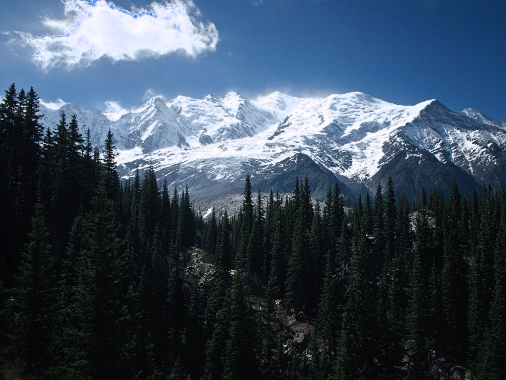

<picture>
  <source media="(dynamic-range: high)" srcset="snow-peak.uhdr.jpg">
  <source media="(color-gamut: p3)" srcset="snow-peak.p3.jpg">
  
</picture>
<!-- Keep HDR calm in grids and let it run when opened:
     .grid img { dynamic-range-limit: standard; }  .lightbox img { dynamic-range-limit: no-limit; }
     Never pass these files through an optimizer that re-saves JPEGs: it drops the gain map and the profile. -->
